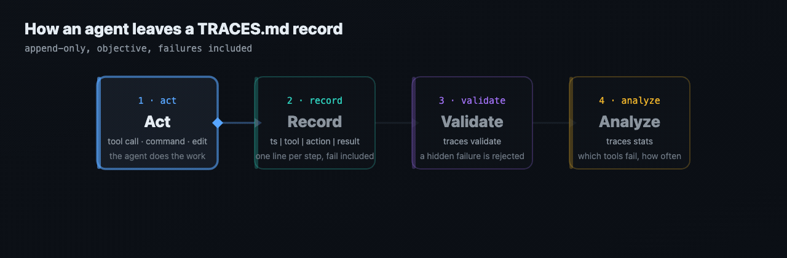

A simple, open format for recording what AI agents did.
Think of TRACES.md as a flight recorder for agents: a dedicated, predictable place where every tool call, command and result is written down, objectively, failures included, so errors can be analyzed and agents can improve.
# .trace/2026-10-12-claude-code-fix-date-parser.md task: Fix the failing date parser test agent: claude-code started: 2026-10-12T09:14:02-05:00 spec: traces/0.1.0 2026-10-12T09:14:31-05:00 | shell: python -m pytest tests/test_dates.py | run the date tests | fail: exit 1, 1 failed, 11 passed 2026-10-12T09:15:02-05:00 | edit: src/dates.py | change the parse format string to %Y-%m-%d | ok: 1 line changed 2026-10-12T09:15:20-05:00 | shell: python -m pytest tests/test_dates.py | run the date tests | ok: exit 0, 12 passed
AGENTS.md files tell an agent how to behave: build steps, tests, conventions. They say nothing about what the agent actually did. An agent says "done, tests pass". Did it run the tests? Which command? Did the first run fail? What did it try next? Today that lives in a chat window that scrolls away, in a format that differs per tool.
TRACES.md complements AGENTS.md with the other half: an objective, append-only record of the process. We intentionally kept it separate to:
Rather than introducing another proprietary log, we chose a name and a format that can work for anyone: plain text, no SDK, no account. You cannot improve what you cannot replay.
AGENTS.md instructions · .editorconfig shared format · CHANGELOG.md human history · TRACES.md objective process record for AI agents
Which tools fail, for which agents, how often, after which steps. The failed steps in order with the exact command and the exact outcome.
An agent that can read its own failure history can stop repeating the same mistake. A trace is the training signal you already produce and throw away.
Cursor, Trae, Kiro, Claude Code, Codex, Aider: all can emit the same lines. Compare agents on the same task, across vendors.
Reviewers see what was run, not a summary of what went well. A diff tells you what changed; a trace tells you how it got there.
grep '| fail' .trace/* is already error analysis. No database, no daemon.
One line per operation. No dependency. A trace is a file you can commit next to the work it describes.
A trace that lists only the successes is worse than none, because it looks like evidence. The spec makes this a rule, and the validator enforces it where it can see an omission: a step marked ok next to a non-zero exit code, or a retry whose failure was never recorded, is rejected.
$ traces validate examples/invalid/2026-10-12-demo-hidden-failure.md examples/invalid/2026-10-12-demo-hidden-failure.md:6: error[E040]: hidden failure: status is ok but the result reports exit code 2; record it as 'fail' INVALID: 1 files, 1 errors, 0 warnings $ echo $? 1
It is a plain file, so any agent that can write a file or run a shell command can emit it. No integration needed: point your agent at SPEC.md, or give it the install page.
The names above are tools that can run shell commands or write files. Listing them does not mean they have endorsed the format.
All three are synthetic, with the failures real traces have. The machine form (JSONL, with a JSON Schema) is the same trace, one JSON object per line.
2026-10-12T09:14:05-05:00 | shell: git status | list working tree changes | ok: clean 2026-10-12T09:14:31-05:00 | shell: python -m pytest tests/test_dates.py | run the date tests | fail: exit 1, 1 failed, 11 passed 2026-10-12T09:14:48-05:00 | read: src/dates.py | read the date parser | ok: 64 lines 2026-10-12T09:15:02-05:00 | edit: src/dates.py | change the parse format string to %Y-%m-%d | ok: 1 line changed 2026-10-12T09:15:20-05:00 | shell: python -m pytest tests/test_dates.py | run the date tests | ok: exit 0, 12 passed 2026-10-12T09:15:41-05:00 | shell: python -m pytest | run the full test suite | partial: exit 0, 212 passed, 3 skipped 2026-10-12T09:16:10-05:00 | shell: git commit -am "fix date parser format" | commit the change | ok: 7be31d0
2026-10-11T14:04:20-05:00 | shell: python -m pytest tests/test_export.py | run the export tests | fail: exit 1, ImportError: cannot import name 'write_csv' from 'reports.export' 2026-10-11T14:04:51-05:00 | edit: reports/__init__.py | export write_csv from the package | ok: 1 line changed 2026-10-11T14:05:12-05:00 | shell: python -m pytest tests/test_export.py | retry the export tests | fail: exit 1, 2 failed: test_unicode_header, test_quote_comma 2026-10-11T14:07:20-05:00 | shell: python -m pytest tests/test_export.py | retry the export tests | ok: exit 0, 9 passed
2026-10-10T11:30:40-07:00 | shell: sed -i '' 's/timeoutMs/timeout_ms/g' src/*.ts | rename the key in the sources | partial: 5 of 6 files changed, src/legacy.ts is read-only 2026-10-10T11:31:44-07:00 | shell: npm test | run the test suite | fail: exit 1, 4 failed: config.parse.spec.ts 2026-10-10T11:33:02-07:00 | shell: npm test | run the test suite | ok: exit 0, 88 passed
Want a real one? This repository writes its own traces, failures included: .trace/.
.trace/ at the root of the repository, named <date>-<agent>-<slug>.md. traces new does it for you; most agents can scaffold one if you ask.ts | tool | action | result. Use traces append, or traces run -- <command> to run a command and record its real exit code.fail even after a later step repairs them. No reasoning, no opinion, no story in a step line. A step is never edited or deleted.traces validate --strict .trace in CI keeps traces well formed and honest. traces stats turns a folder of traces into per-agent, per-tool failure rates.
Open the interactive player: play, pause, scrub, step with the arrow keys.
Python 3.9+, standard library only, MIT. One command, traces.
| Command | What it does |
|---|---|
traces init | create .trace/ and a trace file for today |
traces new | start a trace for a task (reads repo, branch, sha from git) |
traces append | add one step: locked, checked, atomic. Refuses a dishonest or out-of-order step |
traces run -- cmd | run a command and record it with its real exit code, timeouts and missing commands as fail |
traces validate | lint a file or folder against the spec; exit 1 on any error (a CI gate) |
traces show, cat | render a trace for reading; print it in either form |
traces fmt | normalize, and convert between Markdown and JSONL |
traces stats | per agent, per tool, failure rate, most failing commands (--json) |
traces status | health of a trace folder with alert thresholds for CI (--check) |
$ traces stats examples/*.md
3 traces, 28 steps: 21 ok, 5 fail, 2 partial (failure rate 17.9%)
by agent
claude-code 1 traces 7 steps 1 fail 14.3%
codex 1 traces 14 steps 3 fail 21.4%
cursor 1 traces 7 steps 1 fail 14.3%
by tool
shell 18 steps 5 fail 2 partial 27.8%
edit 8 steps 0 fail 0 partial 0.0%
most failing commands
2x fail of 3 shell: python -m pytest tests/test_export.py
1x fail of 2 shell: npm test
Give it to your AI. Paste this into any agent that can run shell commands. It reads the install page, asks before it changes anything, and starts writing traces:
Read https://maxont.github.io/TRACES.md/install and install traces for me.
Terminal shortcut (never edits your shell config; add --dry-run to preview):
curl -fsSL https://maxont.github.io/TRACES.md/install.sh | bash
Or run the container: docker run --rm ghcr.io/maxont/traces --help. Full instructions for humans and for your AI: /install.
TRACES.md came out of day-to-day work with several coding agents (Cursor, Trae, Kiro, Claude Code, Codex) on the same repositories: five tools, five different ways of saying what they had done, and no way to compare their failures. One shared rule, "every agent writes an objective trace", turned into this format.
It is maintained as an open format that should benefit anyone running agents, regardless of which one. MIT licensed. Spec traces/0.1.1 is a draft: issues and pull requests on GitHub are welcome, and north_star.md says what the project will and will not become.
Not a logging framework, not telemetry, not analytics with a backend. No daemon, no server, no account: a trace is a file. It does not record why an agent did something. Reasoning belongs elsewhere.
Yes, a few. The header needs task, agent and started; every step line needs exactly four fields: ts | tool | action | result. Everything else is optional. SPEC.md is short.
No. A step records what tool was used, what it did and how it ended. Reasoning, opinions and narrative do not belong in a trace, and the validator warns about them.
Record it as fail with the exit code or the head of the error. A later step that repairs the problem is a new step; the failed one keeps its status. A trace that hides failures is non-compliant.
You can append. A recorded step is never edited or deleted; a mistake is corrected by a later step. This is what keeps traces usable as evidence.
Usually yes, next to the work they describe. If you do not want them in history, add .trace/ to .gitignore; the format does not change. Never put secrets in a trace: write [redacted].
No. Logs are for services. A trace is for one agent working on one task, readable by a person in a minute and by a script without guessing.
traces fmt --to jsonl -w .trace/<file>.md writes the JSONL twin next to it. The conversion is lossless in both directions. The JSON Schema is published in the repository.
Give it the install page (Read https://maxont.github.io/TRACES.md/install and install traces for me.), or add one line to your AGENTS.md: "For every task, write a trace under .trace/ following SPEC.md."